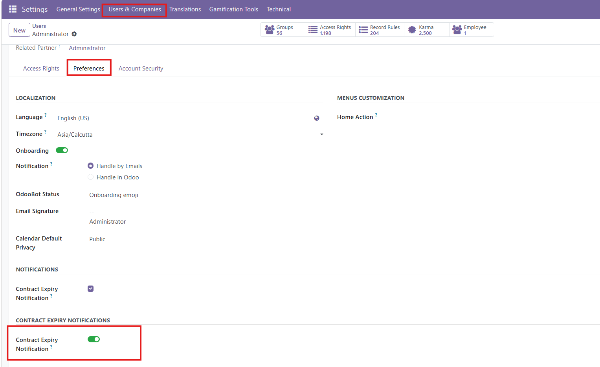
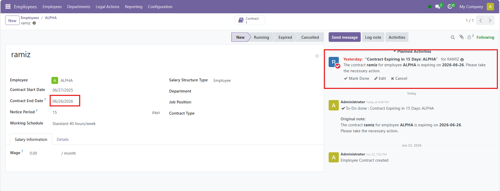

Sends activity notifications to selected users 15 days before employee contract expiry. Users can opt-in via their user settings by enabling the 'Contract Expiry Notification' field.
Navigate to Settings > Users & Companies > Preferences. Under the Contract Expiry Notifications section, simply toggle the setting to receive timely alerts.

The system automatically creates a planned activity for opted-in users on the Employee record 15 days prior to their contract end date.

For more information or support, please contact us.